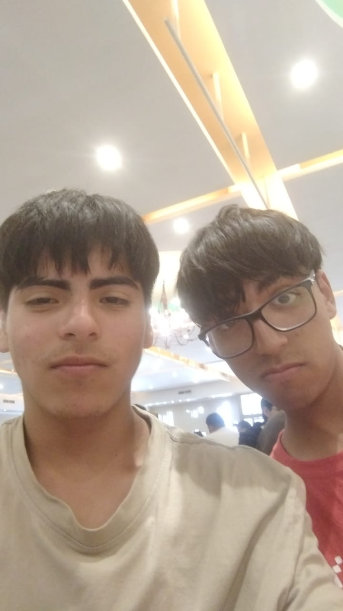
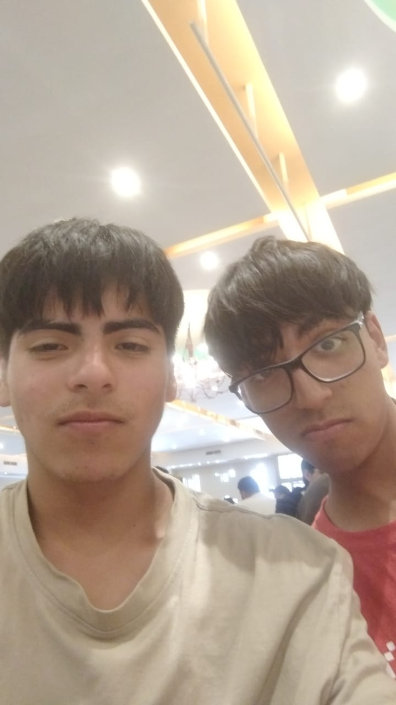

✨ Galería Temática Giarella
En la actualidad tengo dos gatitos uno macho y una hembra su nombre son: Atenea y Garfield

Desde pequeña, siempre me han gustado los gatos, he tenido muchos durante mi vida este gusto por los gatos lo obtuve gracias a mi mamá ya que a ella tambien le gustaban los gatitos.
Me gusta mucho el sushi pero no lo como muy seguido
Mi favorito es el sushi envuelto en palta.
Y cuando como sushi con mi hermana y ella no se come todo me lo robo todo >:3
Amo dormir, todos los dias me tomo una siesta. Me gusta dormir para asi escapar un rato
Me gusta mucho escuchar música, me hace liberar todo mi estres y me hace desconectarme del mundo.
Actualmente mi cantante favorito es Beny Jr
✨ Galería Temática Ian
Me gusta mucho este juego llamado omori, es mi juego segundo juego favorito ya que hubo un tiempo el cual no tenia a nadie con quien pasar el tiempo y este juego me ayudo durante ese tiempo
Pero este juego es mi primer juego favorito ya que tiene la misma razon que omori pero tiene un mensaje muy profundo, ademas que el final de juego es hermoso con una historia hermosa que mete a la persona que lo juega mucho en la trama, y por esta razon es mi juego preferido

Esta es la banda que mas suelo escuchar junto con deftones, me gusta el nu-metal tambien el metal ya que por ser muy agresvia o medianamente agresiva me ayuda a concentrarme para hacer mis tareas ademas de que me gusta mucho el ritmo que tienen las canciones
Me gusta mucho dormir, ya que me ayuda mucho a relajarme y tambien poder escapar un rato de los problemas que tengo con el estres de las tareas del colegio y problemas familiares

Me gusta mucho pasar tiempo con mis amigos ya que suelo reirme mucho con ellos, es lo que mas me gusta de estar aqui en el liceo, ademas en estos ultimos 2 años he conocido a personas maravillosas las cuales agradezco de llamar amigos.
 
